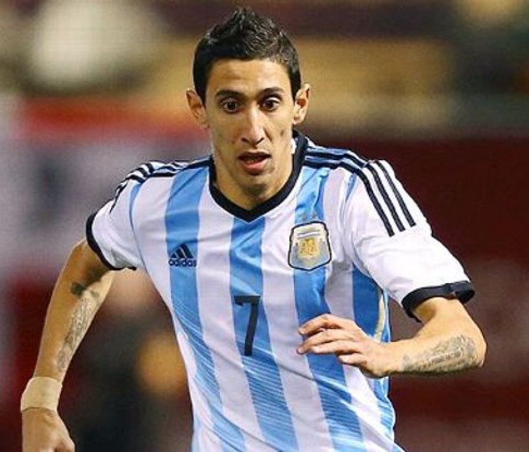
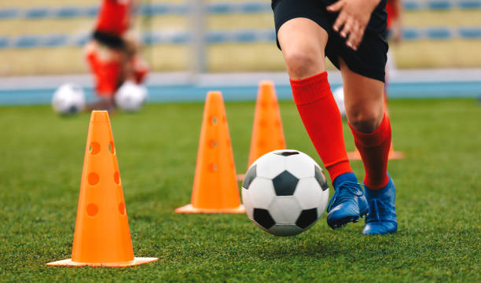
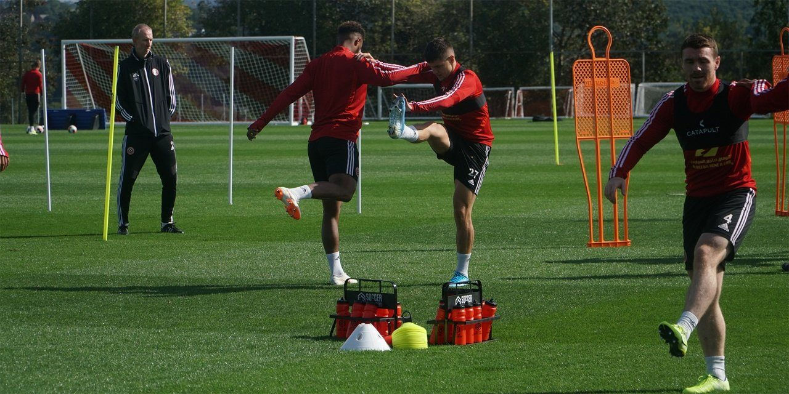
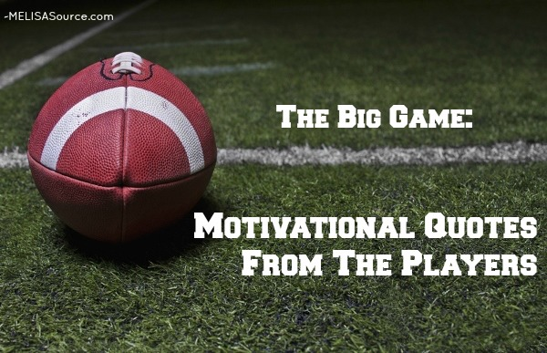
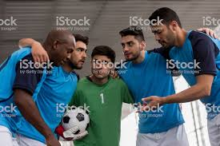
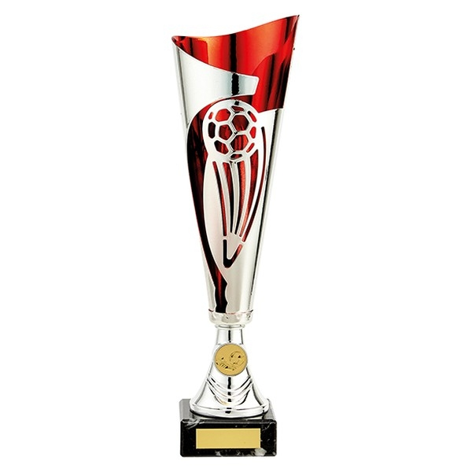
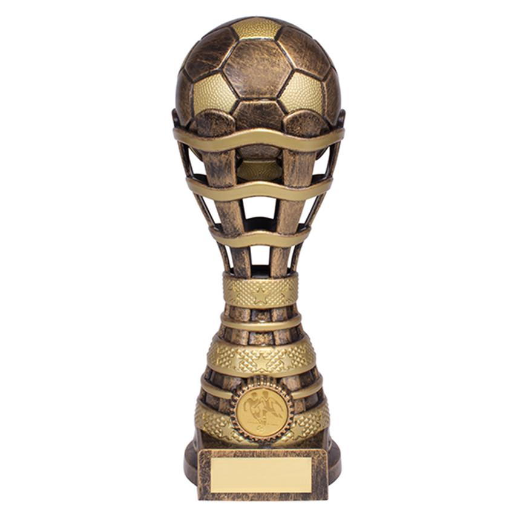
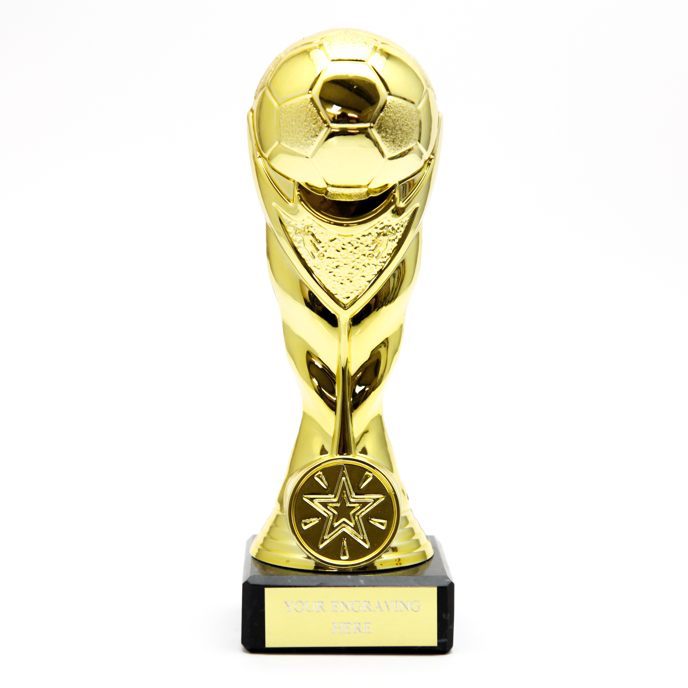

Neymar Jr
Neymar da Silva Santos Júnior, known as Neymar, is a Brazilian professional footballer who plays as a forward for Ligue 1 club Paris Saint-Germain and the

Lionel Messi
Lionel Andrés Messi, also known as Leo Messi, is an Argentine professional footballer who plays as a forward

Cristiano Ronaldo
dos Santos Aveiro GOIH ComM is a Portuguese professional footballer who plays as a forward for Premier League club

Paulo Dybala
Paulo Exequiel Dybala is an Argentine professional footballer who plays as a forward for Serie A club

Mesut Ozil
Mesut Özil is a German professional footballer who plays as an attacking midfielder and is the captain of Turkish Süper Lig club Fenerbahçe. Özil is known for his technical skills, creativity

Mauro Icardi
Mauro Emanuel Icardi is an Argentine professional footballer who plays as a striker for Ligue 1 club Paris

Di Maria
Ángel Fabián Di María is an Argentine professional footballer who plays for Ligue 1 club Paris Saint-Germain and the Argentina national team. He can

Kylian Mbappé
Kylian Mbappé Lottin is a French professional footballer who plays as a forward for Ligue 1 club Paris

Mohamed Salah
Mohamed Salah Hamed Mahrous Ghaly is an Egyptian professional footballer who plays as a forward for Premier League club Liverpool and captains the Egypt national team. Considered

Preparation
To prepare for a football game, practice hard during the week before to improve physically and show your teammates that you're there for them. The night before, eat a balanced meal that includes carbs, fats,

Practice
-Hurdle Drill. Why you should do it: This drill improves quickness and your body's ability to perform cutting movements important in football

Motivation
Preparation. Make sure you get a good night's rest, eat the right things and have your kit bag packed with plenty of time to spare.

Realization
Check out Yale-Princeton Football Game (realization by J.B. Sinclair) by James Sinclair on Amazon Music. Stream ad-free or purchase CD's and MP3s now on
Trophies We Win

Amazing Sport Events
The best international sporting event, hands down. Besides the incredible opening ceremonies that took place during the 2008 Beijing Olympics, the wid

Great Teams
Jamshedpur Football Club is an Indian professional football club based in Jamshedpur, Jharkhand,

Hard Work
That is Cristiano: hard work, dedication, talent. All that is what makes him one of the best footballers ever," he told DAZN. "It's not a mistake that he has won the Ballo